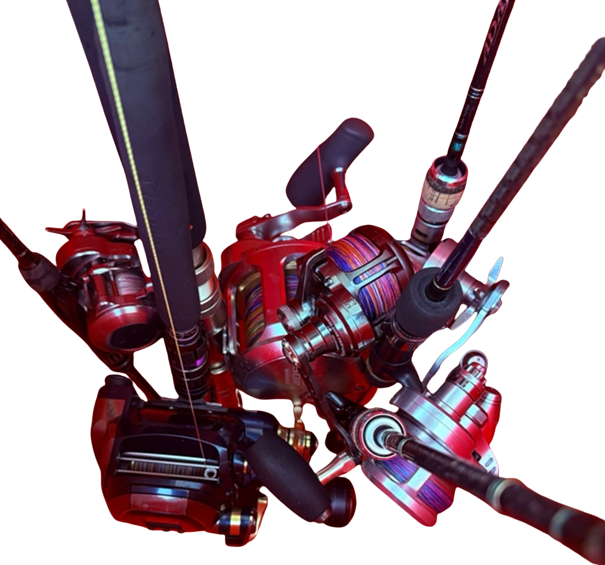
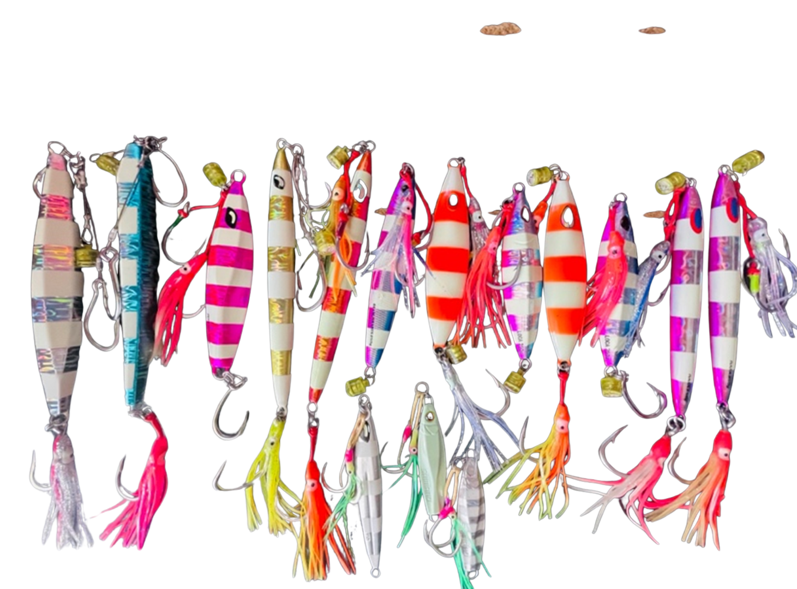

Elite Tackle Armory
Elitle Tackle Armory
Every charter booking includes complimentary, unrestricted access to our premium heavy-duty setups paired with custom, tournament-grade rods.
Gear Categories
Prepared systems, not random equipment.
Each setup is selected for drag strength, line capacity, offshore durability, and practical use against pelagic and reef predators.

Rods
Heavy offshore rod systems
Prepared for trolling, jigging, deep-drop work, and extended fish fights.

Lures & Jigs
Target-matched presentations
Jigs, trolling lures, and rigging support selected based on route, depth, and target species.
Reels
High-drag reel capability
Heavy-duty conventional and electric reel support for deeper structure and larger fish.
Armory Breakdown
Built around the way the fish are targeted.
01
Trolling and surface work
High-speed trolling and surface presentations support Tanguigue, Barracuda, Yellowfin Tuna, and passing pelagics.
Trolling setup image placeholder
02
Jigging and reef-edge work
Slow-pitch and vertical jigging are used around drop-offs, reef edges, walls, and seamount structures.
Jigging setup image placeholder
03
Deep-drop and electric reel support
Deeper targets and heavier bottom work can require electric reel support, strong line capacity, and power management.
Deep-drop setup placeholder
Gear Planning
Tell us your target fish before the trip.
The more specific your goal is, the better the crew can prepare the proper setup.